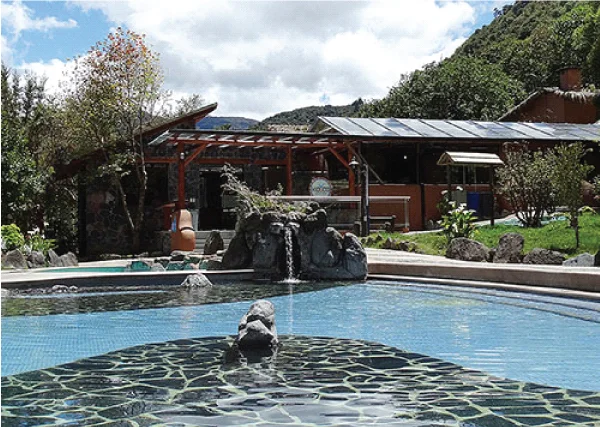
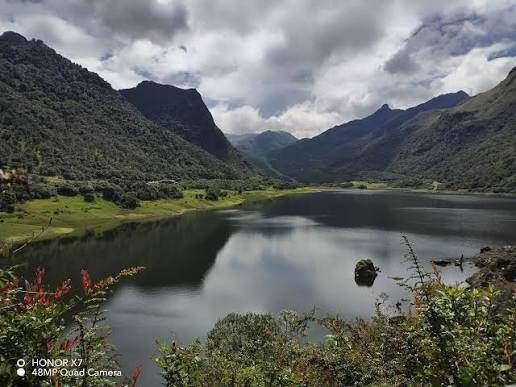
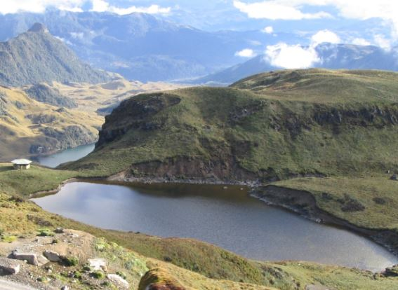

Salud & RelaxBalneario Termas de Papallacta
Complejo de aguas termominerales de origen volcánico rodeado de montañas andinas y piscinas a diferentes temperaturas.
Conocer más →Relájate en piscinas hidrotermales de origen volcánico, camina entre bosques andinos de neblina y reconecta con el páramo en la puerta de entrada a Napo.
Conoce los puntos más representativos del cantón Quijos y planifica tu próxima visita.

Salud & RelaxComplejo de aguas termominerales de origen volcánico rodeado de montañas andinas y piscinas a diferentes temperaturas.
Conocer más →
Paisaje NaturalEspejo de agua natural a más de 3.100 msnm, ideal para fotografía de paisajes y avistamiento de aves de alta montaña.
Conocer más →
Reserva ProtegidaÁrea protegida que resguarda el páramo andino de neblina, pajonales, cascadas cristalinas y senderos ecológicos vírgenes.
Conocer más →Contamos con transporte privado climatizado y guías de senderismo certificados.